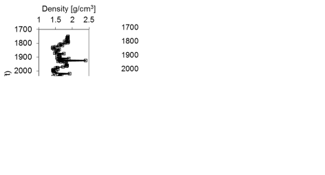
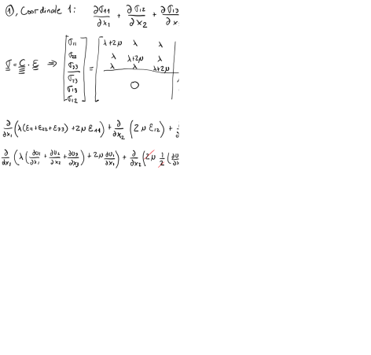

Next: 3. Thermo-hydro-chemo-mechanical coupled processes in Up: Advanced Geomechanics - Class Notes Previous: 1. Stresses in the Subsurface Contents
This document is a draft. Find hand written notes here: https://github.com/dnicolasespinoza/GeomechanicsJupyter/tree/master/ClassNotes.
VTI compliance matrix (3 - vertical direction perpendicular to bedding):
where and
 and
and  is not related to the other parameters.
is not related to the other parameters.
In terms of stiffness coefficients:
![$\displaystyle E_h = \frac{(C_{11}-C_{12}) \left[ C_{33}(C_{11}+C_{12})-2\: C_{13}^2 \right]}{C_{11}C_{33}–C_{13}^2} $](img62.svg)


VTI stiffness matrix (3 - vertical direction perpendicular to bedding):
or in terms of Young moduli and Poisson ratios
![$\displaystyle C_{11} = \left[ \frac{1}{(1-\nu_h) E_v - 2 \nu_v^2 E_h} \right] \left( \frac{E_h E_v - \nu_v^2 E_h^2}{1+\nu_h} \right) $](img69.svg)
![$\displaystyle C_{12} = \left[ \frac{1}{(1-\nu_h) E_v - 2 \nu_v^2 E_h} \right] \left( \frac{\nu_v^2 E_h^2 + \nu_h E_h E_v}{1+\nu_h} \right) $](img71.svg)
![$\displaystyle C_{13} = \left[ \frac{1}{(1-\nu_h) E_v - 2 \nu_v^2 E_h} \right] (\nu_v E_h E_v) $](img72.svg)

The parameter is independent of all other parameters.
Download the file LostHills.xls. We would like to know the state of stress in the subsurface and its influence on a hydraulic fracture completion. At every depth (and data-point) along the vertical well:
 (Poisson ratio remains the same).
(Poisson ratio remains the same).
 and
.
and
.
 |
 |
Generic constitutive model:
Linear elasticity:
Definition of strain:
The corresponding variationnal form is:
where : denotes the tensor scalar product, i.e. ,
is a Neumann boundary,
,
is a Neumann boundary,
 is the boundary force vector,
and
is the boundary force vector,
and  is the outward normal vector (perpendicular to the infinitesimal
surface
is the outward normal vector (perpendicular to the infinitesimal
surface  ).
).
In the case of plane strain linear elasticity, the variational form look like this:
One problem of interest is to find stress component around a wellbore.
Mathematically, this problem implicates solving Eq. 2.3 in
an infinite domain with a pressurized circular opening with radius  and can
be written as follows:
and can
be written as follows:
The analytical solution for this problem reads:
Define problem parameters:
% Start your code-block // Dimensions real ySize = 10.; // y-size of the domain real xSize = 10.; // x-size of the domain real R = 0.1; // wellbore radius //Elastic constants real E = 1e10 ; // young's modulus real nu = 0.3; // poisson's ratio |
Then we calculate Lame constant and shear modulus that are used in the formulation:
% Start your code-block real G = E/(2*(1+nu)); // shear modulus real lambda = E*nu/((1+nu)*(1-2*nu)); // Lame constant |
Finally, we specify values for stress boundary conditions:
% Start your code-block // Stresses real Sx = 10e6; real Sy = 10e6; real Pwell = 0.0; |
Next we proceed to the definition of the domain. We first define all the domain boundaries and then create mesh:
% Start your code-block
// First define boundaries
border Right(t=-ySize/2,ySize/2) {x = xSize/2; y = t;}
border Top(t=xSize/2,-xSize/2) {x = t; y = ySize/2;}
border Left(t=ySize/2,-ySize/2) {x = -xSize/2; y = t;}
border Bottom(t=-xSize/2,xSize/2) {x = t; y = -ySize/2;}
border Well(t = 0, -2*pi) {x = R*cos(t); y = R*sin(t);}
// Create mesh
int n = 20; // number of mesh nodes on the outer borders
int nwell = 50; // number of mesh nodes on wellobre
mesh Omega = buildmesh(Right(n)+Top(n)+Left(n)+Bottom(n)+Well(nwell));
|
The next step is to define Finite Element spaces. These object designate the type of shape functions used to solve the problem. In this example we will be using “P1” elements for displacement: continuous Galerkin polynomials of the first degree defined on triangles. To approximate stresses we will use “P0” elements - piecewise constants.
% Start your code-block // FE spaces fespace Displacement(Omega, P1); // linear shape functions fespace Stress(Omega, P0); // piecewise constants |
Next, we will tell the interpreter to allocate several objects to store
displacement components (objects of type Displacement) and stresse components
(objects of type Stress).
and denote x and y components of the displacement vector.
 and are the components of the virtual displacement vector; we do not
need those vectors per se, but we use these objects to code up the system of
equations.
We also define objects , , and
and are the components of the virtual displacement vector; we do not
need those vectors per se, but we use these objects to code up the system of
equations.
We also define objects , , and  to store stress
components.
Note that we only need 3 components of the stress tensor because it is
symmetric.
to store stress
components.
Note that we only need 3 components of the stress tensor because it is
symmetric.
% Start your code-block Displacement u1, u2, v1, v2; Stress sigmaxx, sigmayy, sigmaxy; |
Next we define macros. Macros are special compiler instructions that are inserted into the part of code where they are called during compilation (as opposed to runtime). In this code we use macros in order to make the system of equation look neat later on. The following code defines two macros for strain and stress “vectors”.
% Start your code-block
// definition of 2 macros:
// macro for strain
macro e(u1,u2)
[
dx(u1),
(dy(u1)+dx(u2))/2,
(dx(u2)+dy(u1))/2,
dy(u2)
]
// eps_xx, eps_xy, eps_yx, eps_yy
// macro for stress
macro sigma(u1,u2)
[
(lambda+2.*G)*e(u1,u2)[0] + lambda*e(u1,u2)[3],
2.*G*e(u1,u2)[1],
2.*G*e(u1,u2)[2],
lambda*e(u1,u2)[0] + (lambda+2.*G)*e(u1,u2)[3]
] // stress sxx,sxy,syx,syy
|
Now, we can finally define the system to be solved corresponding to the Formulation (ref).
// Define system of equations
problem Elasticity([u1,u2], [v1,v2]) =
int2d(Omega) ( sigma(u1,u2)'*e(v1,v2) )
// Boundary conditions
+ int1d(Omega, Right) (Sx*v1)
- int1d(Omega, Left) (Sx*v1)
+ int1d(Omega, Top) (Sy*v2)
- int1d(Omega, Bottom) (Sy*v2)
+ int1d(Omega, Well) (Pwell*(N.x*v1 + N.y*v2))
;
|
In order to solve the problem, we simply need to call this subroutine:
% Start your code-block // Solve system Elasticity; |
Finally, in order to calculate stresses, we use previously define macros again:
// Stresses sigmaxx = sigma(u1, u2)[0]; sigmayy = sigma(u1, u2)[3]; sigmaxy = sigma(u1, u2)[1]; // we could use [2] as well |
The changes in the code are minor. Instead of a wellbore we need to define a fracture:
% Start your code-block
real xf = 40; // fracture half-length
real fw = 0.1; // fracture half-width
border Frac(t = 0, -2*pi) {x = fw*cos(t); y = xf*sin(t);}
|
The bondary condition on the fracture boundary are also a little bit different:
// Define system of equations
problem Elasticity([u1,u2], [v1,v2]) =
int2d(Omega) ( sigma(u1,u2)'*e(v1,v2) )
// Boundary conditions
+ int1d(Omega, Right) (Sx*v1)
- int1d(Omega, Left) (Sx*v1)
+ int1d(Omega, Top) (Sy*v2)
- int1d(Omega, Bottom) (Sy*v2)
// condition only on one component
+ int1d(Omega, Frac) (Pfrac*(N.x*v1))
;
|
[To be developed]
[To be developed]
Consider a 2D problem of a circular cavity subjected to far field effective stresses
 = 12 MPa and
= 12 MPa and
 = 3 MPa.
The diameter of the cavity is 0.2 m.
Rock properties:
= 3 MPa.
The diameter of the cavity is 0.2 m.
Rock properties:  = 10 GPa,
= 10 GPa,  = 0.20, unconfined compression strength
= 0.20, unconfined compression strength  = 30 MPa, tensile strength
= 30 MPa, tensile strength  = 2 MPa.
= 2 MPa.
 ,
,
 and
and
 for a domain = [-1m, +1m], and = [-1m, +1m]. You may define a polar grid for
for a domain = [-1m, +1m], and = [-1m, +1m]. You may define a polar grid for
 . How far does the presence of the wellbore influence stresses?
and
for = 0.1 m. Is there any section of the rock in shear or tensile failure? Where?
,
and
) assuming a domain size 2 m by 2 m. Compute
and
for the same lines as in point (b), and compare with Kirsch's analytical solution. Repeat the process for a domain size 0.5 m by 0.5 m. Are there any differences? Why?
and
.
. How far does the presence of the wellbore influence stresses?
and
for = 0.1 m. Is there any section of the rock in shear or tensile failure? Where?
,
and
) assuming a domain size 2 m by 2 m. Compute
and
for the same lines as in point (b), and compare with Kirsch's analytical solution. Repeat the process for a domain size 0.5 m by 0.5 m. Are there any differences? Why?
and
.
Hint: An example code for 2D elasticity in FreeFEM++ and the corresponding explanation are available at https://github.com/dnicolasespinoza/GeomechanicsJupyter/: Kirsch_Shovkun.edp and FreeFEM_Tutorial_Shovkun.pdf. You can also try FreeFEM++ online here: https://freefem.org/tryit.
Consider a 2D problem of an elliptical fracture (half-length  = 10 m).
Solve the problem using just half of the domain.
Set the fracture along the left boundary of a domain: = [0 m, 100 m] and = [-50 m, 50 m], with fracture center at
= 10 m).
Solve the problem using just half of the domain.
Set the fracture along the left boundary of a domain: = [0 m, 100 m] and = [-50 m, 50 m], with fracture center at  (0,0) m.
This boundary will have a pressure boundary condition.
All other boundaries will have zero displacement.
Rock properties: = 30 GPa, = 0.20.
(0,0) m.
This boundary will have a pressure boundary condition.
All other boundaries will have zero displacement.
Rock properties: = 30 GPa, = 0.20.
,
and
imposing a fracture pressure  = 10 MPa. Plot results.
at the middle of the fracture (L1 = ( = [0, 100 m], = 0 m), Figure 2.32). How far does the influence of the fracture extend?
along fracture length and beyond fracture tips (line L2 = ( = 0 m,
= 10 MPa. Plot results.
at the middle of the fracture (L1 = ( = [0, 100 m], = 0 m), Figure 2.32). How far does the influence of the fracture extend?
along fracture length and beyond fracture tips (line L2 = ( = 0 m,  [-50, 50]) m, Figure 2.32) and compare with analytical Griffith solution.
[-50, 50]) m, Figure 2.32) and compare with analytical Griffith solution.
![\includegraphics[scale=0.40]{.././Figures/CH2-01.PNG}](img41.svg)
![\includegraphics[scale=0.40]{.././Figures/CH2-02.PNG}](img42.svg)
![\includegraphics[scale=0.40]{.././Figures/CH2-03.PNG}](img43.svg)
![\includegraphics[scale=0.40]{.././Figures/CH2-04.PNG}](img44.svg)
![\includegraphics[scale=0.40]{.././Figures/CH2-05.PNG}](img45.svg)
![\includegraphics[scale=0.40]{.././Figures/CH2-06.PNG}](img46.svg)
![\includegraphics[scale=0.40]{.././Figures/CH2-07.PNG}](img47.svg)
![\includegraphics[scale=0.40]{.././Figures/CH2-08.PNG}](img48.svg)
![\includegraphics[scale=0.40]{.././Figures/CH2-09.PNG}](img49.svg)
![\includegraphics[scale=0.40]{.././Figures/CH2-10.PNG}](img50.svg)
![\includegraphics[scale=0.40]{.././Figures/CH2-11.PNG}](img51.svg)
![\includegraphics[scale=0.40]{.././Figures/CH2-12.PNG}](img52.svg)
![\includegraphics[scale=0.40]{.././Figures/CH2-13.PNG}](img53.svg)
![\includegraphics[scale=0.40]{.././Figures/CH2-15.PNG}](img55.svg)
![\includegraphics[scale=0.40]{.././Figures/CH2-16.PNG}](img56.svg)
![\includegraphics[scale=0.40]{.././Figures/CH2-18.PNG}](img58.svg)
![\begin{displaymath}%compliance matrix
\left[
\begin{array}{c}
\varepsilon_{11} ...
...ma_{13} \cfrac{}{}\\
\sigma_{12} \cfrac{}{}
\end{array}\right]\end{displaymath}](img59.svg)
![\includegraphics[scale=0.40]{.././Figures/CH2-19.PNG}](img75.svg)
![\includegraphics[scale=0.40]{.././Figures/CH2-21.PNG}](img77.svg)
![\includegraphics[scale=0.40]{.././Figures/CH2-22.PNG}](img78.svg)
![\includegraphics[scale=0.40]{.././Figures/CH2-23.PNG}](img79.svg)
![\includegraphics[scale=0.40]{.././Figures/CH2-24.PNG}](img80.svg)
![\includegraphics[scale=0.40]{.././Figures/CH2-25.PNG}](img86.svg)
![\includegraphics[scale=0.40]{.././Figures/CH2-27.PNG}](img88.svg)
![\includegraphics[scale=0.40]{.././Figures/CH2-29.PNG}](img90.svg)


![\includegraphics[scale=0.50]{.././Figures/FracModel.PNG}](img129.svg)